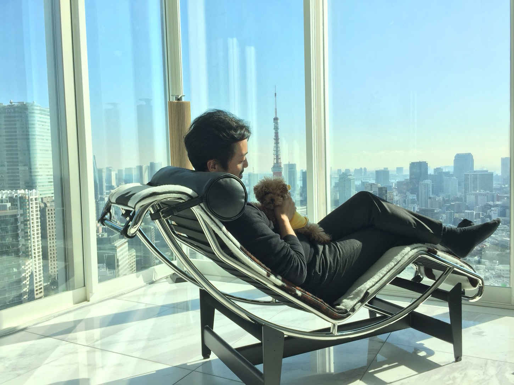
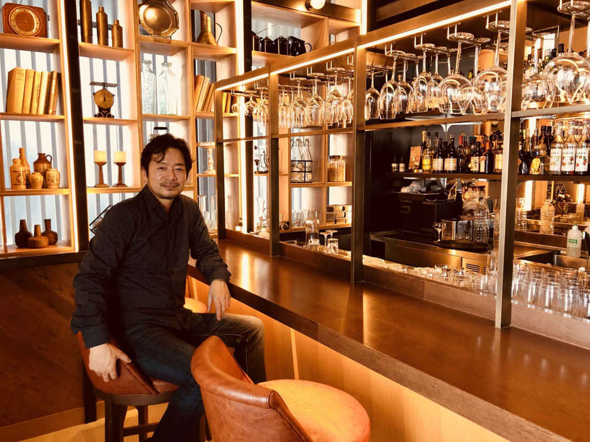

| サラリーマンが将来の不安をなくす「安心」投資法 〜不動産投資で人生を変える極意〜 | |
| 木村拓也 | |
| Hitotsuku Publication (2018) | |
木村拓也
私は不動産投資と出会って、人生に時間のゆとりを取り戻した上に、ちょっとだけお金のゆとりを手に入れました。今は海外放浪生活がメインで、人生の時間を満喫しています。
そんな私が今回対談をすることになったのは、旅先で出会った佳菜子さんというＯＬさん。
彼女は、昔の私のように時間とお金に追われて、先が見えない将来に怯え、苛立っていました。彼女の婚約者もまた同じ悩みを抱えていました。
「いつまで働けばいいの？ 働いた先に何があるの？」
彼女や彼の姿は過去の私、そしてこの本を読んでいるあなたと重なるはずです。
私も不動産投資と出会うまでは不安で、時間に追われて、人生を楽しむゆとりなんてありませんでした。
だからこの本を手に取ったあなたにも、加奈子さんと私との話の中で彼女が手に入れた「一歩を踏み出す勇気」を出して欲しいと思います。
そして、私が手に入れた「お金と時間のゆとり」を、あなたも手に入れてください。

木村 こんにちは、佳菜子さん。お久しぶりです！
佳菜子 まだあれから１週間しか経ってないですけど、お久しぶりです(笑)。
木村 えっと改めまして、木村です。
佳菜子 え？ そこからですか？ じゃあ佳菜子です(笑)。27
歳で都内でＯＬやってます。
木村 結婚はされてるんですか？
佳菜子 いきなり突っ込んできますね。婚約者はいますけど、将来が不安で結婚の話が前に進まないんです......。
木村 将来の不安っていうとお金のことですか？
佳菜子 そうです。彼も私も働いているけど、結婚して子供ができて私が働けなくなった時の収入のこととか、彼が病気になった時のことを考えると不安で不安で......。
木村 と、とりあえず私たちの出会いについて話しますか(笑)。
佳菜子 そうですね。それでは私と木村さんの馴れ初めから。
木村 ちょっと、やめてくださいよ(笑)。私妻子持ちだから誤解されちゃいますよ(笑)。
佳菜子 あはは、すみません。木村さんがいきなり結婚のこととか言い出すからつい。えっと私たちが出会ったのはハワイですよね。
木村 そうハワイ。私はいろんなところを旅してるんだけど、やっぱりハワイの海の色が好きでたまに行ってるんです。スキューバが好きですし。
佳菜子 もうそこから若干イラっとしたんですけどまあスルーしましょう。私はボーナス２回分全部突っ込んで人生初のハワイ旅行に行ってたんです。
木村 なんだかごめんなさい(笑)。
佳菜子 ほんとなんかずるいと思いましたよ。私、お金ないから弾丸ツアー的な感じでスケジュール詰まりまくってるのに、いつ見ても木村さんはビーチでのんびりしてて。
木村 基本、リゾートは心の休憩なんで、スキューバしてるとき以外はのんびりしてることが多いです。
佳菜子 ほんとのんびりしてましたよね。私がバナナボートやって、スキューバやって帰ってきてもまだビーチで寝っ転がってるから、「何この人」って思ってついつい声かけちゃったんです。
木村 そうそう。びっくりしましたよ(笑)。いきなりおっかない顔した日本人女性が「なんでそんなにのんびりできるんですか？」って怒りながら聞いてきて(笑)。
佳菜子 だって腹が立ったんですもん。私は日本であくせく働いてせっかくハワイにきたのに、ハワイでもあくせく遊んでて。木村さんはハワイなのに家みたいにくつろいでるし。これが格差社会かって腹立たしくなったんです。
木村 道理で怖かったわけだ(笑)。
佳菜子 それで私が木村さんに「なんでそんなにのんびりできるんですか？ 仕事してないんですか？ 仮想通貨で儲けたんですか？」って質問したんです。
木村 いや、あれは質問っていうか尋問って感じでしたけどね。それで私が投資やってるって言ったら、佳菜子さん、もっとイラっとした顔しましたよね。
佳菜子 だって投資ってお金持ちがやるって感じだから単なるボンボンなのかと思って。
木村 まあまあそう言わず。まあなんやかんやあって日本でゆっくり話をすることになったんです。
佳菜子 なんやかんやって結構大切なところを省略しましたね。私が木村さんに投資について色々聞こうと思ったら、次のアクティビティの時間になったから続きは日本で、ってことになったんですよね。
木村 そうそう。ハワイの佳菜子さん、信じられないくらい忙しそうでしたから(笑)。
佳菜子 褒められてる気がしない......。まあいいや、木村さんに聞きたいことたくさんメモってきたんで覚悟しといてください。
木村 怖いなあ(笑) 。お手柔らかにお願いします。
佳菜子 まず質問なんですけど、木村さんちってタワーマンションですか？
木村 そうです。
佳菜子 Facebook とか見てたらすんごいセレブっぽいお部屋だったんですけど。
木村 やっぱり、いろいろ突き詰めると景色が良くて、便利なところに住みたいってところに行き着いて、タワーマンション一択になりましたね。生活するのに便利ですから。
佳菜子 ぐぬぬ。私なんて隣のビルの壁しか見えないワンルームに住んでるのに。
木村 私だって昔からあんなところに住んでた訳じゃないから怒らないでください(笑)。
佳菜子 まあいいでしょう。あとでどうやって今のゆとりを手に入れたのかじっくり聞かせてもらうんで。
木村 お手柔らかにお願いします(笑)。
佳菜子 あんなタワーマンションあるのに海外も行くんですか？
木村 行きますね。東南アジアがお気に入りで、去年はタイ、カンボジア、マカオ、中国、フィリピンに行きましたね。それからイタリアも。
佳菜子 私が泣けなしのボーナス２回分でハワイ行ったっていうのに、そんなに海外放浪してるんですね......。
木村 やっぱりあっちこっちで新しいもの見たり、食べたり体験したりすると、すごい刺激になるんですよね。知らない世界、知らない言葉を知ることで自分がさらに大きくなれるっていうか。
佳菜子 そうですよね。私だって弾丸ハワイツアー行って本当に元気に慣れたし、視点が増えた気がする。
木村 そこなんです。だから私も海外放浪が趣味で。
佳菜子 っていうかそれだけじゃなくて、いっつも美味しそうなものばっかり食べてませんか？
木村 どうせ食べるなら美味しい方がいいじゃないですか。けど毎日そんなに外食ばっかりしてる訳じゃないですよ。部屋で家族でお鍋つついたりとかも普通にします。
佳菜子 自由気ままでいいですね。なんかお金にも時間にもゆとりありまくりで。
木村 佳菜子さんは、そんなにのんびりできないんですか？
佳菜子 できる訳ないですよ。ＯＬですから。
木村 佳菜子さんってＯＬさんなんですね。
佳菜子 そうです。ＯＬっていうか一般職っていうか。中規模商社で営業事務やってて発注したり在庫管理したりしてます。
木村 なんかかっこいいじゃないですか。商社の営業事務って。
佳菜子 私もそう思って就職したんですけど、ちっとも良くなかったです。働き出して５年ですけど、本当に忙しくて毎日家に帰ったら８時。なのに残業代全部でないし。
木村 ブラックですね。
佳菜子 そうですよ。しかも家賃高いからお給料の半分以上家賃で消えるし。無駄に都心にオフィスある上に残業多いから、家賃が安くて駅歩がある部屋を借りると体が辛いんです。
木村 わかります。職場からの距離って大切ですよね。
佳菜子 そう。けどそこを優先したらお金なんて貯まらなくて、働いても働いてもお金貯まらないし、好きなもの買えないんです。家賃と食費でいっぱいいっぱい。
木村 暮らして行くのがやっと、って感じですね。
佳菜子 本当それ！ 毎日家と会社を往復するだけでの人生って感じです。男性社員みたいに、すっごい昇進することもないし、年収１０００万円もらえることもないから、やる気も出ないし。
木村 なんのために働いてるんだって、感じですよね。
佳菜子 私みたいなのがワープアっていうんだと思います。
木村 いやあ、ワープアってもっと酷い状態だと思いますよ。
佳菜子 そうかもしれないけど、私はプアです。働いてもお金貯まんないし、会社は辛いし。
木村 仕事も辛いんですか？
佳菜子 一般職っていうから昔みたいに「お茶汲みコピー取り」かと思ったら全然違くて、発注ミスったらライン止まるってクライアントが怒りまくるし、営業はあんまり責任取ってくれないし、そもそも仕事量が多すぎて定時じゃ絶対に終わらないし。しかも上司はパワハラ気味で、鬱になる人続出だし。
木村 えー。佳菜子さん意外と大変な思いしてるんですね。毒が止まらない......。
佳菜子 もうたまりまくってます。仕事内容にも上司にもうんざりしてるのに、お金はたまらないし、このまま会社にいて一生ブツブツ文句言いながら働くのかと思うと、毎日どよーんって感じです。
木村 お、お疲れ様です......。佳菜子さんの婚約者さんは？
佳菜子 彼も似たような感じです。っていうか私よりももっとひどい感じで、家に帰ってきたら午前０時過ぎとか当たり前です。残業代も全額出ないからモチベが上がらないっていっつもぼやいてます。
木村 それは２人とも辛い感じですね。
佳菜子 っていうか木村さんも昔サラリーマンだったんですよね？
木村 私も佳菜子さんや婚約者さんみたいに擦り切れたサラリーマンでした(笑) 。
佳菜子 全然そう見えないんだけど。
木村 結構悲惨でしたよ。デフォルトが終電帰りで、遅いときはタクシーで。土日も持ち帰りで家で仕事してました。
佳菜子 24
時間休みなしみたいなもんじゃないですか。まさにコンビニ。
木村 酷い(笑)。確かにそんな感じでした。朝７時前に家を出て、帰ってきたら11
時ですから、セブンイレブン。
佳菜子 (笑)。体壊しませんでした？ そんな生活続けて。
木村 多分心は壊れてたと思いますよ。そんな生活続けたら心のどこかがおかしくなって、当たり前のことがわからなくなるんですよね。定時は５時とか、夜11
時は寝る時間だとかそういう当たり前のことが。夕方５時になったら、「これから働くぞ！」って言ってましたからね。今考えたらどうかしてる(笑)。
佳菜子 わかります。定時過ぎてから勝負みたいな。
木村 あれはダメですね。人間の心と体をダメにします。
佳菜子 残業せずに帰ると白い目で見られるんですよね。いつの時代だって感じだけど、結構そういう会社多いです。うちも残業多くて体壊す人がいますよ。
木村 私も胃潰瘍で倒れましたし。
佳菜子 えー！ それは痛かったでしょうに。胃潰瘍になるまで働いてたんだ......。
木村 ものすごく痛かったですよ。脂汗がじわって出て、ひいひい言ってました。けど上司は苦しむ私に「次倒れたから解雇だから」って言ったんです。
佳菜子 え。ドン引き。
木村 けどそのときは、私も「仕事はやめちゃいけない」「働かなきゃ食べてけない」っていう固定観念があったから歯を食いしばって耐えました。
佳菜子 木村さん、社畜だったんだ......。
木村 もろ社畜です。
佳菜子 今は、自由な海外放浪者なのに。
木村 今の私からは想像つかないってよく言われるけど、本当に病みかけてました。自由な時間がないってかなりきついことですよ。しかもお金もない。
佳菜子 ですよね！ 私も残業代カットされるからお給料増えないし、残業多すぎて遊べないし、「何のために働いてるんだろう」って毎日思います。
木村 そうそう。「生きるために働いてるのか、働くために生きてるのか」って考えたら虚しくなるのに、働かなきゃ生きていけないからどうしようもない感じでした。
佳菜子 なんだかちょっと安心しました。
木村 え？ 私が社畜で病みかけてたから？
佳菜子 うん。今は海外放浪してるしセレブっぽいけど昔は普通の人だったんだと思って。
木村 (笑)。そうですね。けど今もいたって普通の人ですよ。
佳菜子 全然ちがう！ なんかお金と心にゆとりありすぎですよ！ その理由しっかり聞かせてもらいますからね！
佳菜子 木村さんって何でそんなに余裕あるんですか？ 木村さんの投資って何ですか？
木村 直球ですね(笑)。私の投資は「不動産投資」
です。
佳菜子 へー！！ それだけですか？
木村 まあ色々ありますが、基本は不動産投資です。
佳菜子 不動産投資で、毎月お金が入って海外にも行けるし美味しいお肉も食べられるってこと？
木村 そうです。毎月ほとんど決まった額が振り込まれてます
。
佳菜子 木村さんって、何にもしてなさそうだけどそれでもお金が入ってくるんですか？
木村 失敬な(笑)。けど何にもしてないのは本当かもしれないですね。私じゃなくて不動産がお金を稼いでくれるので。
佳菜子 何それ。ってことは毎日オフィスに行ったりとか、なんか投資活動？ トレード？ みたいなのをしたりしてないってことですか？
木村 はい。私がイタリアにいても東京にいても同じ金額が支払われます。
佳菜子 激しく羨ましいんですけど。何にもしないでお金が入るとか最高じゃないですか。
木村 そうですね。お金だけじゃなくて時間にゆとりができたのが大きいです。好きなときに好きなことができるので
。
佳菜子 しかも、好きなことを「お金」で我慢する必要もないと。
木村 はい(笑)。っていうか佳菜子さんすんごい前のめりになってますけど。
佳菜子 そりゃそうですよ！ 私が必死に部材の発注したり納期交渉してる時に、木村さんはスキューバやったりビーチで寝っ転がったりしてお金稼いでるんでしょ？ 彼が死ぬほど残業してる時に、バリのビーチでカクテル飲んでるし。
木村 なんか、それ私が怠け者みたいじゃないですか(笑)。
佳菜子 いやいや、めっちゃ羨ましいです。何それ。天国ですよ。
木村 佳菜子さん、すごいですね。
佳菜子 何がですか？
木村 その好奇心と前向きな感じです。こんな話すると「人間は汗水垂らして働いてなんぼ」って軽くお説教する人が多いんです。けど佳菜子さんは否定せずに好奇心旺盛だから、すごいなあと思って。
佳菜子 だって、目の前にそれで成功してる人がいるんだから根掘り葉掘り聞きたくなるでしょ。否定したら知らずに終わっちゃう。
木村 そうです。佳菜子さんの言う通りで、成功するためには否定しないことと好奇心が必要不可欠
なんですよ。
佳菜子 あら、私褒められてる(笑)。
木村 はい、褒めてます(笑)。佳菜子さん、素質あるかも。
佳菜子 本当に？ 私に不動産投資の素質ありってことですか？
木村 その好奇心とアグレッシブな感じが大切ですから。
佳菜子 やったあ！！ なんかやる気がみなぎってきた！
佳菜子 やる気は出たんですが、今更恥ずかしいこと聞いてもいいですか？
木村 なんだろ(笑)。どうぞ(笑) 。
佳菜子 えっと、不動産投資って何やるんですか？ 土地転がしですか？
木村 あはは(笑)。ですよね。いきなり不動産投資って言われてもピンときませんよね。
佳菜子 土地を転売して稼ぐことみたいなイメージしかなくて。
木村 確かにそれも不動産投資ですが、私がやってるのは「賃貸経営」
です。
佳菜子 ちんたい経営？ もっとわかりやすくお願いします。
木村 アパートとかビルを所有して、家賃収入を得る
んです。
佳菜子 木村さんは大家さんってことですか？
木村 そうです。私は５つのアパートを持っていて85
世帯の大家さんです。
佳菜子 ひえーー！ すごいですね。ってことはもしかしたら私が毎月支払った家賃を受け取ってるのが木村さんって可能性もありますね(笑)。
木村 あはは(笑)。
佳菜子 私毎月８万円も家賃を支払ってて、引き落とされるたびに「大家さんっていいなあ、何もしなくても８万円もらえるもんなあ......」って思ってたんです。
木村 そう。その大家さんになるのが私の不動産投資っていうことです。
佳菜子 納得しました。木村さんは大家さん投資法ってわけですね。
木村 それでもいいですよ(笑)。
佳菜子 だから、ビーチでごろごろしてるのにお金が入るし、時間にゆとりがあって、美味しそうなお肉ばっかり食べてるんだ。
木村 佳菜子さん、地味にビーチでごろごろしてるネタひっぱりますね(笑)。
佳菜子 だって、私はハワイに行ったのに大忙しで、木村さんはずっとのんびりしててすんごい羨ましかったんだもん(笑)。
木村 それもこれも、大家さん投資法のおかげです(笑)。
佳菜子 納得！ 木村さんが激しく余裕ある理由、納得しました。物件を持っててそれが稼いでくれてたんですね。
木村 はい。物件たちが毎月決まったお金を届けてくれます。
佳菜子 納得したけど、ちょっと引っかかるのがお金なんですけど。
木村 お金？
佳菜子 そうですよ。アパート１棟買うってすっごいお金かかりません？
木村 規模とか立地とかにもよりますが、数千万円はかかりますね。
佳菜子 ほら。そんなお金普通の人は用意できません。木村さんって元々お金持ちか、超節約家でアパートを買うお金貯めてたんでしょ？ 大家さんになれるのってお金持ちって相場が決まってますから。
木村 あはは(笑)。確かにそんなイメージありますね。
佳菜子 そうでしょ？ なんか葉巻吸ってるおじさんが、余ったお金でビル買ってまたお金持ちになるみたいな。
木村 すんごい想像力ですね(笑)。でも私の場合は、１円も物件代支払っていませんよ
。
佳菜子 え？ どういうことですか？ わかった！ 親から相続されたんだ！
木村 いえいえ。ローンで買ったんです。だから私は自分でお金を支払ってません。
佳菜子 ってことはお金持ちじゃなくてもできるってことですか？
木村 そうですよ。お金持ちじゃなくてもローンさえ通れば誰でも大家さんになれます
。
佳菜子 びっくり！ 大家さんってみんなお金持ちなんだとばかり。銀行がお金さえ貸してくれたらオッケーってことですもんね。
木村 はい。借りたお金から返済するので自分の貯金は一切減らないどころか家賃収入で増える一方です。
佳菜子 今まで大家さんとかって「お金持ちがもっとお金持ちになる方法」って思ってましたけど、本当は「普通の人でもお金を増やせる方法」
なんですね。
木村 その通り！ 佳菜子さん、意外との見込みが早いです(笑)。
佳菜子 意外と？ 失礼な(笑)。
佳菜子 不動産投資なら普通の人でもできそうって思ったけど、お金借りて物件所有して家賃収入ゲットってちょっとまどろっこしくないですか？ ３０００万円が倍になるのは何年先だって感じで。
木村 なるほど。
佳菜子 それよりも株とか仮想通貨とかＦＸの方が儲かるんじゃないの？ って思ったんですよ。例えば仮想通貨なら、去年10
万円だけ買ったのに１０００万円になった人っているでしょ？ そのほうが効率いいし大儲けできそう。
木村 去年は、確かに仮想通貨凄かったですよね。億り人続出でした。
佳菜子 そうなんですよ！ 仮想通貨とか株ってわりかしやりたいと思ったら１週間くらいで始められるでしょ？ けど不動産投資はお金借りなきゃだし大変そう。それにすぐ倍にならないし。
木村 佳菜子さんのいう通り、仮想通貨や株って２倍になるの早いですけど、結局は「その人の腕次第」なんですよ。
佳菜子 腕？
木村 そうです。２倍になるコインや銘柄はたくさんあるけど、それを探して２倍になるまで持ってられる人って一握りなんですよ。去年の仮想通貨相場は別。あれは誰でも簡単に乗れましたけど、去年の上昇は仮想通貨が浸透する初期だからこそあったわけで、今はあんなに狂い上げしてません。
佳菜子 確かに、ビットコインは２００万円になったってニュースでやってたけど、今は１００万円くらいです。
木村 そうなると、株みたいにトレードの技術や腕、知識が必要になります。誰でも買ったら儲かるわけじゃありません。
佳菜子 そっか。確かに周りで株やってる人いるけど１年もしないうちに、株の話しなくなりました。
木村 そうです。個人で株をやっている人の９割は毎年損をしていて、そのうちやめてしまうんです。勝っている人はほんの一握りで、絶え間無く努力しています。
佳菜子 なるほど。株も仮想通貨も結局は能力次第
ってことなんですね。
木村 その通り。儲けるどころか損する可能性が高いということ。しかも、常にトレードしたり、企業について調べたり、チャートを研究したりと「頭と体」を動かさなきゃいけないんですよ。
佳菜子 そういえば仮想通貨やってる人、ずっとスマホ見てました。夜も眠れないって。暴落した時は泣きそうになってました。
木村 そうなったら、働いてるのと一緒ですよね。トレードしなきゃお金にならないし、勝ちトレードし続けるためには努力が必要だし。
佳菜子 ほんとだ......。風邪ひいたり病気になったりしたらうまくトレードできないだろうし、お金持ちになってもずっと「相場」に追いかけられちゃうんですね。
木村 けど不動産投資は違う。本当に何もしなくていいし、なんなら誰がやっても一緒
。
佳菜子 そっか！ 不動産投資なら家賃が入り続けるから能力とかいらない
ですもんね。木村さんの物件を私がもらったら、その瞬間から私が木村さんになれる、と。
木村 あげませんけどね(笑)。
佳菜子 ちっ！(笑)。
木村 それに、不動産投資は収入が安定している
んです。持っている部屋の数は決まっているし、家賃も決まっているから手元に残るお金はほとんど毎月一緒です。
佳菜子 確かに、私は毎月同じ家賃を支払ってます。
木村 ですよね。だから、生活が安定します。けど、株や仮想通貨って波が激しいです。１０００万円利益を出した翌月に５００万円の損失を出すこともあります。しかも、暴落がいつ来るかわからない。
佳菜子 ブラックマンデーみたいなやつが来たら、株も仮想通貨も大暴落しちゃうんですもんね。
木村 詳しいですね。
佳菜子 社会の授業で習っただけです(笑)。
木村 大暴落が来たら、凄腕トレーダーでも損をしてしまいますし、しばらくは大きな利益を出すのが大変です。投資は、自分の力だけでなく景気など外部の要因にも左右されちゃいます
。
佳菜子 そっか。株とか仮想通貨って儲かるイメージだけど、不安定なんですね。
木村 そうです。大儲けできるものは、だいたいリスクも大きいですから。
佳菜子 仕事や時間に追われるのが嫌なのに、相場や社会情勢に一喜一憂する生活はちょっと嫌かも。
木村 おっしゃる通り。それが、不動産投資と、それ以外の投資の違いです。
佳菜子 株とか仮想通貨は結局腕だし心も休まらないけど、不動産投資は物件がお金を運んでくるから、何にもしなくていい
ってことですね。暴落しないし。
木村 綺麗にまとめてくれてありがとうございます(笑)。
佳菜子 不動産投資は誰でもできるし収入が安定するって言いましたけど、失敗することはないんですか？
木村 そりゃありますよ。むしろ失敗する人が多いくらいです。
佳菜子 えー！ ちょっと話が違うじゃないですか！ 例えばどんな失敗ですか？
木村 まあ、怒らないで聞いてくださいね。
佳菜子 わかりました。本気になってたのに急に失敗するとかいうからつい興奮してしまって。
木村 これは、私の知り合いのＡくんのお話です。彼は、東京オリンピック決定以降の不動産投資ブームに乗って自己流で不動産投資を始めたんですよ。
佳菜子 Ａくん、挑戦者ですね。
木村 はい。始めたまでは良かったんだけど自己流でやっちゃって。
佳菜子 自己流ってダメなんですか？
木村 ダメですね。不動産業界はプロがしのぎを削る狭い世界ですからね。Ａくんはそれを知らずに不動産屋さんに行って「投資物件が欲しい」って言ったんですよ。
佳菜子 ごくごく普通に聞こえるけどダメなんですね。
木村 もうここが失敗の始まりです。Ａくんは大きな会社の社員だったので、年収があるとふんだ不動産業者は、Ａくんにガンガン物件をプッシュしたんです。「この物件は超優良物件ですよ。常に満室で状態もいいですよ」って。
佳菜子 ほうほう。
木村 Ａくんはインターネットで聞きかじった情報しか持っていなかったし、プロのいうことなら嘘はないと思って、その営業トークを信じて１回物件を見に行っただけで購入を決めちゃったんです。
佳菜子 嫌な予感しかしないです。
木村 Ａくんは、不動産業者を訪れてからたった１カ月で大家さんになりました。
佳菜子 夢の大家さんですね。
木村 でも、いざ大家さんになってみたらちっとも家賃が入らないんですよ。
佳菜子 え、なんで？
木村 実は、その物件の近くにあった病院が移転することになって、看護士さんや理学療法士さんたちはみんな引っ越していったんです。
佳菜子 ひどい。
木村 不動産業者を訪れた時は、まだ病院が稼働していたけど閉鎖は決まっていました。けど業者はそれを言わなかったんです。
佳菜子 Ａさんは騙されたんですね。
木村 結局Ａくんは、家賃を思いっきり下げて入居者を募集しました。満室とは言わないけど、なんとか人は集まりました。けど、物件のメンテナンス費用や管理費用、ローンの返済をすると、収入どころか赤字になったんです。
佳菜子 ということは、Ａさんはお給料の中からローンを返済しているってこと？
木村 そうです。不動産収入で楽になるつもりが、もっと苦しくなってしまいました。
佳菜子 そんな......。悲しすぎるんですけど。
木村 佳菜子さんはＡくんが何を失敗したかわかりますか？
佳菜子 うーん。情報収集かな？
木村 そうですね。もっと現地に見にいったり情報を集めればこの失敗は防げたかもしれません。けど一番の失敗は「自己流」でスタートしたことです。
佳菜子 自己流じゃ絶対ダメってことですか？
木村 はい。不動産投資業界はプロがひしめき合っているから、一見さんの素人はカモと思われます。町の不動産業者に行ったら確実に外れ物件を買わされて、Ａくんの二の舞
です。
佳菜子 じゃあどうしたらいいんですか？ 私せっかく本気になってるので、どうしたらいいか教えてください。
木村 不動産投資で成功する方法は、すでに不動産投資で成功している人たちが多い環境に身を置くこと
ですね。
佳菜子 成功している人が多い環境って？
木村 わかりやすいのは不動産投資家のコミュニティです。すでに複数物件を所有している人たちが作っているコミュニティに所属することで、成功を疑似体験できますし、不動産投資で一番重要な「情報」を得ることができます。私たち個人の不動産投資家はどうしてもプロにはかないません。情報量が違いすぎます。
佳菜子 Ａくんみたいに売れ残り物件買わされて人生終了パターンですね。
木村 その通り。不動産業者は横の繋がりが強くて、基本的に良い物件は仲間内で売買します。
佳菜子 私の入る余地なしじゃないですか。
木村 基本的には、そう。けど、個人の不動産投資家グループの仲間に入れば、グループ内で共有される優良物件情報をゲットできます
。
佳菜子 個人には情報が来ないのに、グループには優良物件情報が流れてくるんですか？ 怪しくないですか？
木村 佳菜子さんって、本当に急に鋭くなりますね(笑)。個人といえどもグループとなれば話が別なんです。
佳菜子 どういうことですか？
木村 すでに成功している人たちは、それぞれが良い物件を紹介してくれる優良業者と繋がっている
んです。だから、初心者さんが仲間入りしたときも、知る人ぞ知る良い業者さんを紹介してもらえます。
佳菜子 なるほど。初心者の個人には情報力はないけど、先輩たちが知っている業者さんを教えてもらえるってわけですね。
木村 そうです。僕は不動産投資は「情報戦」、そして「人脈戦」
だと考えています。その２つとも個人はなかなか手にする事が出来ないのですが、成功者と繋がる事ができれば、いとも簡単にその２つをゲットできるんです。
佳菜子 なるほどー！！ よくわかりました。これなら未経験の私みたいな女子でも不動産投資を成功できそうです。
木村 はい！ 良い物件さえ買えばあとは物件が家賃を運んできてくれるので、性別とか能力とか関係なくお金を稼げます
。グループ内には結構女性もいてゆとりを手に入れていますので。
佳菜子 「女子でも成功できる」ってところは理解できたんですが、女子でもお金を借りられますか？
木村 佳菜子さん、話の展開が早いですね(笑)。
佳菜子 だって、大家さんになって私もハワイのビーチでのんびりしたいから(笑)。
木村 わかりました(笑)。ぶっちゃけ不動産投資のローンはＯＬさんでも借りられます
。というか会社員なら大丈夫です。
佳菜子 本当ですか？ 不動産投資ローンってお金持ちのおじさんが組むイメージですけど、私や彼でも借りられるんですか？
木村 勤続年数がある程度あれば問題なし
です。ちなみに佳菜子さんは勤続年数何年ですか？
佳菜子 えっと、新卒からだから５年です。
木村 ５年あれば問題なしです。銀行でお金を借りて大家さんになれます。婚約者さんは何年？
佳菜子 彼は勤続10
年です。
木村 素晴らしい。佳菜子さんも彼も借りられますよ。彼ならかなり信用力がありそうだから、まとまった金額を借りられるかもしれませんね。
佳菜子 よかったー！ じゃあ２人で始めちゃったりして。
木村 それすごいことですよ！！
佳菜子 え？ ２人で不動産投資ですか？
木村 そうです。２馬力不動産、最強ですよ。しかもお２人とも若いから
20
代でスタートすれば、30
代には僕と同じ状態になってます。しかも２人だから２倍の速度で資産形成できますね
。
佳菜子 最高ですね！ あ......！！
木村 どうしたんですか？
佳菜子 私、ハワイ旅行でお金使っちゃって貯金がないんですけど......。ボーナス２回分全部ハワイで使っちゃいました。
木村 思い切りましたね(笑)。けど全然問題なしです。
佳菜子 本当に10
万円もないんですけど大丈夫ですか？ 部屋借りるときだって現金必要ですよ？
木村 大丈夫です。オーバーローンって言って、物件購入費だけじゃなくて手数料とかの諸費用まで貸してくれるローンがあるからそれを使えば、貯金ゼロでもいけます
。
佳菜子 それって、怪しい街金みたいなとこじゃないですよね？
木村 ははは(笑)。ちゃんとした銀行が貸してくれるから安心してください。
佳菜子 よかった。すんごい金利高くて遅れたら怖いお兄さんが来るとかないんですね。
木村 佳菜子さん、漫画の読みすぎです(笑)。
佳菜子 最近怖い金融系の漫画読んじゃってつい(笑)。
木村 あ、ただキャッシングとかクレジットカードの返済が遅れまくってたら審査に落ちちゃうかもしれないんですが、大丈夫ですか？
佳菜子 大丈夫です。私ビビリだから現金主義なので(笑)。
木村 じゃあ佳菜子さんも不動産投資のためにローン組める可能性大です。
佳菜子 よーし！ やる気が出てきたぞー！
木村 おー(笑)。やる気ですね。
佳菜子 だってグループに入って良い物件探して、銀行でローン借りたら大家さんデビューですよね。って、そういえば大家さんって色々やることありますよね。
木村 佳菜子さん良い感じに本気になってきましたね。
佳菜子 はい！ 木村さんの話聞いてたら私でもできる気がしてきたので！ けど、大家さんの仕事がちょっと心配です。仕事しながら色々できるのかなあ。
木村 そこは大丈夫ですよ。管理会社に物件の管理は一任します
ので。
佳菜子 管理会社？
木村 はい。アパートやビルの管理業務を一括して請け負ってくれます。
佳菜子 全部ですか？ うちのアパート大家さんが近くに住んでて草抜きとか掃除とかでしょっちゅうアパートに来てるんですけど、そういうのやってくれるってことですか？
木村 そうそう。今は大家さんはみんな管理会社に任せちゃうんですよ。佳菜子さんのアパートの大家さんは結構珍しいタイプです。今の人たちって大家さんがアパートをうろつくの、嫌がるし。
佳菜子 確かに(笑)。大家さんがいるとなんか監視されてるみたいで嫌です。
木村 そう。それもあって管理は管理会社に任せます。管理会社は、掃除や巡回、などアパート管理業務を代行してくれる
んです。
佳菜子 なるほど！ じゃあ私が大家さんになったら本当に何にもしなくて良いってことですね？
木村 ええ。ＯＬしながらでも全然余裕です。女性ＯＬさんで不動産投資やってる人もたくさん知ってますし。
佳菜子 それは心強い！ だったら、仕事が忙しい彼でも余裕で大家さんになれますよね。
木村 もちろんです！
佳菜子 私、今大家さんデビューした時のことを妄想しまくってるんですけど、大家さんと女子の人生ってめっちゃ親和性高いと思いません？
木村 おっと、急に核心をつくこと言い出しますね。もっと詳しく聞かせてください！
佳菜子 私、人生ってなんだか虚しいなって思ってたんですよね。
木村 虚しい？
佳菜子 はい。女の人って結婚とか出産が絶対に立ちはだかるんですよ。私はまだ結婚してないし、今のところ予定がないけど職場の同僚とか先輩見てたら女性は結局結婚とか出産で、キャリアが一時停止する上に、仕事をやめちゃったら再就職がすんごい難しいんです。
木村 確かにそうですね。育児休暇取得できる企業は増えてますが、まだまだ小さな企業だと難しいし、第２子以降も出産ってなると、連続で育休とか産休取るのは厳しいし。
佳菜子 そしたら、旦那さんに金銭面では頼らざるを得ないんです。高校大学って頑張って勉強して、就職活動で勝ち取った職場でガンガン働いて来たのに、結局長くても10
年働いておしまい。あとは派遣とか契約社員とかになっちゃって。
木村 お子さんが小さいうちは中々フルで働くの難しいし、そもそも１回退職しちゃうと、キャリアアップは難しいですよね。
佳菜子 そう。ブランクがあるし、若い子の方がお給料を安く雇えるからか、主婦は敬遠されます。
木村 まだまだ日本は働くママに厳しい世の中なので、「子供の熱とかで休まれたら困るから子供が小さい母親は雇いたくない」と思っている雇用主が非常に多いです。
佳菜子 ひどいですよね。結局、旦那さんに金銭的に頼ることになるから、人生の選択を自分でできないんです。
木村 結婚とか離婚ってこと？
佳菜子 特に離婚です。「この人とはもう無理だ」って思っても経済的に自立できないから、離婚に踏み切れず毎日苦しんでる人をいっぱい知ってます。
木村 「子供が大きくなるまでは」って我慢するやつですね。そういう人は年々増えていて、熟年離婚も珍しくありませんね。
佳菜子 そうです。熟年離婚に至るまでの間、女性がひたすら我慢し続けるんです。
木村 なるほど。
佳菜子 けど大家さんになって安定した収入があったら、辛い結婚生活を我慢することないし、もっと色々自由になれると思うんです。妊娠中も育児期間中も収入は途絶えないし。
木村 女性が自分で人生の舵切りをできるってことですね！ 今日は私がレクチャーするはずだったのに、いつの間にか佳菜子さんに教えてもらっちゃいましたね(笑)。
佳菜子 この問題は女性しかわかりませんからね！ なんかこれからの人生に希望が湧いてきました。
木村 ふと思ったんですが、それって男性にも同じことが言えるんですよね。奥さんが経済的理由で、離婚をせずに我慢して、男性が自由になる定年過ぎに熟年離婚。人生の終盤にかけて、全ての歯車が狂ってしまうんです。これって恐怖ですよ。
佳菜子 確かにそうですね。
木村 もし、夫婦で２馬力で不動産投資をやっていれば、お互いに自立した人間なので、フラットな関係を築けるから熟年離婚のリスクは低下しますし、もしダメだと思ったらお互いに、取り返しがつく段階で離婚できます
。
佳菜子 そっか。女性が経済力を持つということは、男性の人生のリスクを軽減させることにもなるんですね。
木村 はい。それに、お金があれば多くの問題が解決できますし。
佳菜子 お金にゆとりがないと、心がギスギスしますからね......。
木村 佳菜子さん！ 遠い目になってますよ(笑)。
佳菜子 すみません、つい。
木村 他にもあるんですか？
佳菜子 なんか、女としての空白期間を埋められると思うんです。
木村 女のとしての空白期間とは？
佳菜子 ほら、女性って結婚妊娠でキャリアが途切れて、収入も途切れるでしょ？ そりゃ産休育休とって働ける人もいるけど、そんなに恵まれた職場環境じゃなければ育休は厳しいこともあるし。退職するのも辛いけどもっと辛いのは「自分が稼げないこと」だと思うんです。
木村 なるほど。旦那さんに養ってもらってる感覚ですね。
佳菜子 家事や育児の対価は年収いくらって話題になったけど、だからってそのお金が誰かからもらえるわけじゃないんですよ。いくら育児や家事を頑張っても収入は増えません。これが、仕事を頑張ってた人は特に「稼いでないストレス」が半端ないみたいで。
木村 その視点は新鮮です。そんなこと考えたことなかった。
佳菜子 養ってもらってるからいいじゃんって言われるかもしれないんだけど、養われてるって思うと自分のことにお金使いにくいんです。お洋服とかお化粧とか。
木村 気にせず使えばいいのに。
佳菜子 そう思うでしょ？ 私も既婚の友達にそう言ったんだけど、家計だって楽じゃないから無駄なお金使いたくないっていうんですよ。
木村 複雑な女心ですね。
佳菜子 それくらい察してください(笑)。お金使うのに罪悪感があるから自分のための買い物はできないし、育児があるから自分のための時間も作れないしで、出産してから３年くらいは空白期間みたいになっちゃうんです。
木村 自分が自分じゃないみたいな？
佳菜子 そう。自分のために何にもできない。
木村 そういえば私の友達も、独身の時はおしゃれして毎日遊び歩いてたのに、出産した途端に見かけなくなりました。
佳菜子 遊びたくても遊べないんです。小さい子供をおいて遊ぶことなんて、日本では許されないことですから。
木村 海外みたいにベビーシッターに預けるって選択肢がないですよね。
佳菜子 けど、大家さん収入があれば全然変わると思うんです。自分が働けなくても収入が入るから罪悪感がないし、好きなものを買ったり食べたりできちゃう。しかも、お金にゆとりがあればシッターさんを頼んだりもできますよね。
木村 なるほど。育児中の女性の自分だけの時間を、不動産投資のお金で作り出すってことですね。
佳菜子 そうです！ 木村さん話が早い！ そしたら育児ノイローゼになったり、社会と遮断されて不安になるママたちも減ると思うんです。
木村 すごくいい考え方だと思います。でもまたなんで未婚の佳菜子さんがそんなにママ事情に詳しいんですか？
佳菜子 そりゃ27
歳になったら、周りはだいぶ結婚して出産してますからね。みんなの愚痴をＬＩＮＥとかで聞きまくってるんです。
木村 どんな感じの愚痴ですか？
佳菜子 大体は「お金がない」「時間がない」「旦那が嫌」の３つです。自分が働けないから収入が足りない、子供の面倒してるから本すら読めない、とかすっごく彼女たちは苦労してます。挙げ句の果てに旦那が憎くなる始末で。
木村 確かにそれなら、不動産投資が解決できますね。家賃収入でお金は増えるし、そのお金でシッターさんや家事代行を頼めば自分の時間ができる。いざとなったら旦那さんとの離婚にも踏み切れる
。
佳菜子 なんか、不動産投資って女性のためにあるんじゃない？ って気がしてきました(笑)。
木村 ちょっと、結婚前から離婚のこと考えないでくださいよ(笑)。
佳菜子 うちは大丈夫ですよ。だって、彼にも不動産投資をやってもらって、２馬力で木村さんを追い抜くので(笑)。
木村 本当にそれあり得ますよ。早く始めれば始めるほど、物件持てますしお金が増えますから。
佳菜子 早く彼に話したい。
木村 実は、佳菜子さんや彼みたいな会社員って不動産投資に向いてるんですよ。
佳菜子 そうなんですか！？ どういうところが？
木村 収入が安定しているところです。
佳菜子 そうですか？ ベンチャー企業とかの社長のほうが向いてそうですけど。
木村 いえいえ。不動産投資はまさに会社員のための投資
です。長年働いてきた勲章「勤続年数」があれば、小企業のオーナー社長よりも、信用力は高い
です。
佳菜子 じゃあ、私や彼はぴったりってことですね。
木村 はい！ 私はいつも言っているのですが「不動産投資は会社員のご褒美」
です。働き続けたことで、収益物件を買って「不労所得」を手に入れられるんです。
佳菜子 会社員のご褒美っていい響きですね。
木村 でしょ？ 僕の周りにも不動産投資を始めて脱サラした人はたくさんいます。
佳菜子 たくさんですか！？ それ聞くとやらなきゃ損っていうか、知ってるのにやらないなんてもったいないですよね。
木村 そうですよ。私の周りを見る限り、マイホームを買うのと変わらないか、それよりも敷居は低いです。
佳菜子 そっか。マイホームは買っても利益はありませんが、収益物件は毎月利益が上がる
んですものね。
木村 そうです。だから、頑張った会社員さんは不動産投資を始めるべきなんです。
佳菜子 よーし！ 彼に話す前に先に買っちゃおっかな(笑)。
木村 いいですね。佳菜子さんの勢いって、不動産投資にはかなり大切です。
佳菜子 そうなんですか？ どういうところが？
木村 猪突猛進な感じが。
佳菜子 それ褒めてます？
木村 褒めてますよ。佳菜子さんタイプはスパッと物件を買えるんで強い
です。
佳菜子 なるほど。普通はスパって買えないんですか？
木村 スパって決められない人は多いです。物件のあら探ししちゃうんですよ。
佳菜子 あら探し。ある意味大切だと思うんですけど。さっきのＡくんみたいに何も知らずに買ったら大損しちゃうかもしれないし。
木村 それもそうなんですが、私たちのところに回ってくる優良物件だと、あんなリスク大物件はないんです。だからそこまで神経質にならず、自分の収入で帰る物件を買うことが成功の近道なんです。
佳菜子 なるほど。あら探しする必要がないってことなんですね。
木村 不動産って完璧な物件はどこにもないんですよ。どこかしら欠点はある。けど何かを妥協して１つ目の物件を買わなかったらスタートしない
んです。
佳菜子 そっか。実は不動産投資ってスタートすることも難しいんですね。
木村 はい。いい物件なのに買う決断が中々できない人は不動産投資には向いていません
。けど女性は結構思いっきりがいいんですよ。
佳菜子 女は度胸みたいな？
木村 そうそう。「あ、これ買います」みたいな感じでサクサク話が進んじゃって。
佳菜子 へえ。そういう人が多いんですね。
木村 ええ。私が見た中でも女性の方が断然決断力に優れていて、話が早いです。その中でも佳菜子さんはかなり早いほう(笑)。
佳菜子 なんか嬉しいです。もうやるしかないって感じですね。
木村 けど、やるときは私に声かけてくださいね。
佳菜子 なんで？ 木村さんの物件譲ってくれるんですか？
木村 あげませんよ(笑)。もう忘れちゃったんですか。「グループの力を手に入れるため」ですよ。
佳菜子 そういえば、興奮して忘れてたけど不動産は自己流で買ったら失敗しちゃうんでしたね。えーと「不動産投資は情報戦と人脈戦！」ですよね。
木村 そうです。仲間と一緒にやらないと絶対にうまくいかないので。個人不動産投資家が優良物件情報を手に入れるためにはグループの力が必要不可欠です。
佳菜子 わかりました！ 不動産投資やるときは木村さんに連絡します。っていうか、木村さんもグループやってるんですよね？
木村 私が主催しているグループがあるので、そこに招待しますよ。佳菜子さん面白いし(笑)。
佳菜子 わーーい！ 嬉しいです。木村さんがついててくれるならすごく心強いです。だって５棟も物件を持ってるんですよね？
木村 そうですね。全部で85
室あります。
佳菜子 電卓使いますね。えっと１室７万円だから......。
木村 生々しいからちょっとやめてください(笑)。
佳菜子 もう計算しちゃった(笑)。やばいですね、これ。
木村 最初は１棟からコツコツ増やしていったんです。少しずつ収入が上がって、最終的には会社を辞めて今の生活になりました。
佳菜子 木村さんもサラリーマンからそこまでこれて、脱サラできたんだから私も頑張ったらそこまでいけるかな。
木村 できます。っていうかできないって思ったら絶対にできないので、やるんです
。
佳菜子 なんかかっこいい。今のを聞いたらできる気がしてきました。彼にもすぐに勧めてみます。
木村 そうそう。その姿勢が大切です。否定から入らないで、まずは一歩を踏み出せば、あとは仲間と一緒に頑張れます
。
佳菜子 木村さんのおかげでこれまでモヤモヤしてたことが吹っ切れました。今日はわざわざお話をしてくれてありがとうございました。
木村 こちらこそありがとうございます。女性の本音が聞けてすごく参考になりました。ちょっと怖かったけど(笑)。
佳菜子 怖くないですよ(笑)。私も３年後はハワイのビーチでゴロゴロ生活しようかな。
木村 私は、目標を決めれば半分実現したようなものだと思っているので、一緒に頑張りましょう！
佳菜子 はい！ 目指せハワイ(笑)。

この本を選んで最後まで読んでいただいた読者のあなたに、心より感謝申し上げます。そして、対談に応じてくれた佳菜子さんにもお礼申し上げます。
私と佳菜子さんの出会いは突然でしたが、彼女との出会いで、私は不動産投資の持つポテンシャルを改めて認識することができました。
最後まで読んだあなたは不動産投資について、少し興味を持っていただけたと思います。日本では、「資金を運用して利益を得ること」に否定的ですが、海外では当然のこと。
だから、不動産投資に興味を持った方はぜひ自分の足で一歩を踏み出してください。不動産投資は佳菜子さんのような女性だけでなく、万人の人生にゆとりを与えてくれる「保険」
のようなものです。
自分が働かなくても、病気になっても変わらずにお金を運んでくれます。
私は昔の私や佳菜子さんのように、「お金を稼ぐためだけに生きる人生」を歩んでいる方が１人でも多く、ゆとりある暮らしになれることを望んでいます。人生は決して長くありませんし、時間は限られています。その大切な時間を「気乗りしない仕事」に費やすことは、「人生の無駄遣い」です。
もし、佳菜子さんのようなモヤモヤを抱えているのであれば、なるべく早く一歩を踏み出してください。
そして、家族や自分の時間を大切にして、心にゆとりを持った人生を取り戻してください。
その１歩を踏み出しさえすれば、あなたの人生は大きく舵を切るでしょう。ハワイのビーチでのんびり暮らすのか、それとも社畜として心と体をすり減らし続けるのか。
あなたはどちらを選びますか？
木村 拓也（きむら たくや）
岩手県出身。
１９８９年、理系の大学を卒業後、これからは情報産業の時代だと考え、某ＩＴ企業に就職。
以後、何も考えずに仕事に没頭し、当時は残業規制もなく毎日終電で帰宅、週末もパソコンを自宅に持ち込んで仕事をしていた。
その結果、41
歳の時に身体を壊して入院。
先輩のひとことで、本当に身体を壊して回復できないと会社を解雇されることに気付き、給与だけに頼ることの不安定さを身をもって感じる。
そんな時に、「金持ち父さん貧乏父さん」という本に出会い、「不動産投資＝不労所得」というものがあることに気付く。
それから不動産投資を始め、会社員を続けながら規模拡大し、10
年間で５棟85
室のアパートオーナーとなる。
その結果、年間わずか２時間の作業で、年間家賃収入４０００万の不労所得の仕組みを得る。
そして、51
才の時に脱サラし、今では好きな海外旅行やスポーツを楽しむ悠々自適な生活をしつつ、サラリーマンなら誰でも安定、着実に行える再現性１００％
の「キムラ式不動産投資法」を、学びたい人達約３００名に伝えている。
公式ホームページ
https://kimura-takuya.com/
YouTube 番組
https://www.youtube.com/channel/UC8W63lHIHXef2fBszqrVdyA
Podcast 番組（iTunes でダウンロードして聴くラジオ番組）
https://goo.gl/hSWCJo
（Android で聴く場合はこちらから）
https://goo.gl/DTjvMT
タイトル サラリーマンが将来の不安をなくす「安心」投資法 〜不動産投資で人生を変える極意〜
発行日 ２０１８年５月30
日
著 者 木村拓也
本書の全部あるいは一部をコピー、スキャン、デジタル化する無断複製は、著作権法上での例外である私的利用を除き禁じられています。本書を代行業者等の第三者に依頼してコピー、スキャンやデジタル化することは、たとえ個人や家庭内での利用であっても一切認められていません。
©２０１８ Takuya Kimura